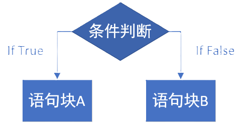

基础的条件控制流程图
条件语句
条件语句有“if”、“if-else”、“if-else if”以及更多的搭配。 其格式中，if和else if必须要有boolean表达式，如if( true )、else if( false )、if(a > b)、else if(a < b) 等等。
if - else 示例
在以下示例中，判断 a 是否大于 b。如果条件成立，输出 "a 大于 b"；否则，输出 "a 不大于 b"。 运行结果将是 "a 不大于 b"。
package PgName;
public class Main {
public static void main(String[] args) {
int a = 10;
int b = 20;
if (a > b) {
System.out.println("a 大于 b");
} else {
System.out.println("a 不大于 b");
}
}
}
if - if 示例
在以下示例中，分别判断 a 是否大于 b 和 b 是否小于 c。两个判断语句是独立的，互不影响。运行结果将是 "b 小于 c"。
package PgName;
public class Main {
public static void main(String[] args) {
int a = 10;
int b = 20;
int c = 30;
if (a > b) {
System.out.println("a 大于 b");
}
if (b < c) {
System.out.println("b 小于 c");
}
}
}
if - else if 示例
在以下示例中，首先判断 a 是否大于 b。如果不成立，则继续判断 b 是否小于 c。 如果以上条件都不成立，则执行 else 中的代码块。运行结果将是 "a > b 和 b < c 都不成立！"。
package PgName;
public class Main {
public static void main(String[] args) {
int a = 10;
int b = 17;
int c = 13;
if (a > b) {
System.out.println("a > b 是真的！");
} else if (b < c) {
System.out.println("b < c 是真的！");
} else {
System.out.println("a > b 和 b < c 都不成立！");
}
}
}
switch语句
switch语句是一种多分支选择语句，它根据表达式的值来决定执行哪一段代码块。与if语句相比，switch语句在处理多个离散条件时更加简洁和高效。
switch语句会根据case标签的值在底层生成一个映射表 ，用于快速定位到对应的代码块，从而提高程序的执行效率， 但是因为其 case xxx : 中的xxx所使用的不是布尔值（boolean），所以无法决定其范围。 当然，你也可以在switch()的表达式中传入布尔值，但是实际上这样做并不合适。
代码演示
package PgName;
public class Main {
public static void main(String[] args) {
int day = 3;
switch (day) {
case 1:
System.out.println("Monday");
break;
case 2:
System.out.println("Tuesday");
break;
case 3:
System.out.println("Wednesday");
break;
case 4:
System.out.println("Thursday");
break;
case 5:
System.out.println("Friday");
break;
case 6:
System.out.println("Saturday");
break;
case 7:
System.out.println("Sunday");
break;
default:
System.out.println("Invalid day");
}
}
}
在这个示例中，switch语句根据变量day的值来决定执行哪个case块。对于本例来说，day的值是 3，则输出的是 case 3: 对应的"Wednesday"。 如果day的值不在1到7之间，则执行default块，输出"Invalid day"。